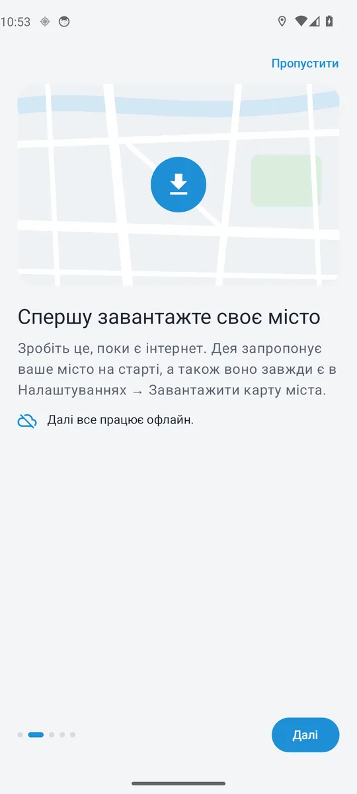
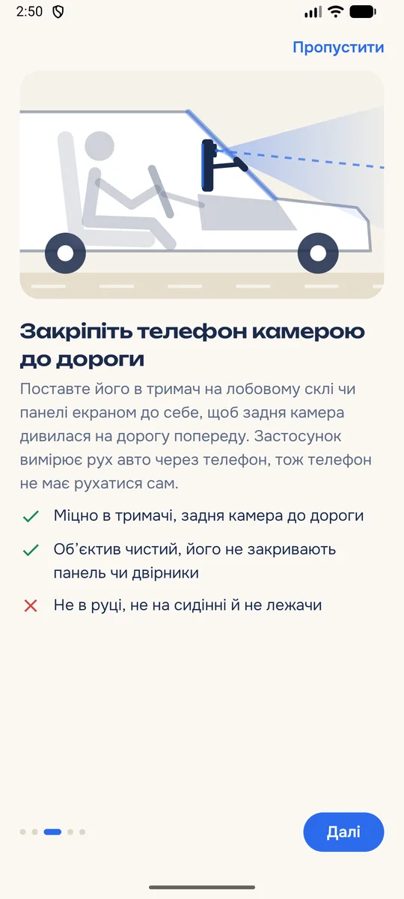
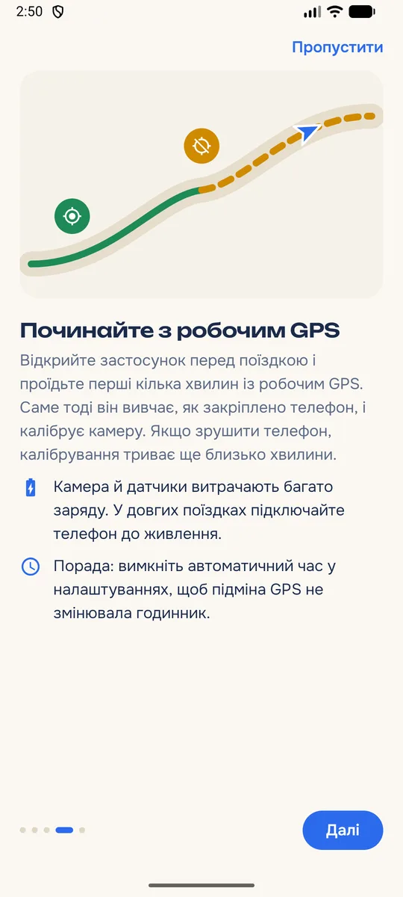
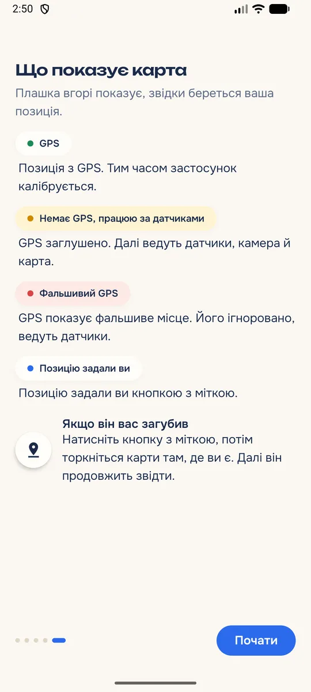

01 / Датчики
Датчики руху
Гіроскоп і акселерометр телефона відстежують кожен поворот, розгін і зупинку.
Дея — безкоштовний офлайн-навігатор для Android. Коли GPS глушать або підмінюють, вона веде вас далі за датчиками телефона, задньою камерою та картою вашого міста.
01 Як це працює
Звичайний навігатор сліпне, щойно GPS зникає або показує, що ви в аеропорту. Дея продовжує вести вас, бо знає, як рухається авто і якими дорогами воно може їхати.
Гіроскоп і акселерометр телефона відстежують кожен поворот, розгін і зупинку.
Дивиться на дорогу попереду й вимірює швидкість. Кадри аналізуються в пам’яті та одразу зникають. Без камери Дея теж працює, лише точність може бути нижчою.
Дороги з OpenStreetMap лежать на телефоні. Позиція завжди «прилипає» до справжньої дороги.
Плашка вгорі екрана показує, звідки позиція
GPS у нормі. Дея веде за ним і тим часом калібрує датчики та камеру.
СупутникиСигнал заглушено. Далі ведуть датчики, камера й карта.
Датчики · камера · картаGPS показує чуже місце. Дея помічає підміну й не дає їй збити вас з маршруту.
Датчики · камера · карта02 Перша поїздка
Знадобиться тримач для телефона на лобовому склі або панелі. Інтернет потрібен лише один раз, щоб завантажити карту.

Крок 01
Поки є інтернет. Після цього все працює офлайн.

Крок 02
У тримачі, екраном до себе, щоб задня камера дивилася на дорогу.

Крок 03
За першу хвилину-дві Дея калібрує камеру й датчики під ваше авто.

Крок 04
Плашка вгорі завжди показує, звідки береться ваша позиція.
03 Відео
Хмара з тисяч можливих позицій, кожна на справжній дорозі. Що далі ви їдете, то точніше Дея знає, де ви.
Пояснення · 34 сКарти © OpenStreetMap
04 Приватність
Камера дивиться на дорогу, а не в інтернет.
05 Питання
Лише щоб завантажити карту свого міста (та за бажанням уточнити коло старту через Gemini, якщо ви самі ввімкнули цю опцію). Далі Дея визначає місце й прокладає маршрут повністю офлайн.
Смартфон на Android 8.0 або новішому, з задньою камерою, гіроскопом і акселерометром. Майже всі сучасні телефони мають їх.
У місті, де багато поворотів, Дея зазвичай тримає вас на правильній вулиці. На довгих прямих дорогах без поворотів похибка поступово росте, а щойно з’являється поворот чи справжній GPS, позиція знову уточнюється. Якщо Дея загубилася, торкніться кнопки з міткою й покажіть на карті, де ви.
Дея бере приблизне місце від Wi-Fi чи мобільної мережі, а далі впізнає, де ви, за формою шляху: повороти, які ви проїхали, порівнюються з вулицями карти. Зазвичай за 300–600 метрів їзди стрілка стає на правильну вулицю. Швидше за все працює, якщо ввімкнено камеру.
Камера й датчики працюють увесь час поїздки, тож у довгих поїздках краще тримати телефон на зарядці.
Від мему з вівцею, яка питає «Де я?». Тепер у неї є відповідь.
06 Завантажити
Завантажте APK прямо з цього сайту або приєднайтеся до бета-тестування в Google Play. Безкоштовно.
Розкажіть, як Дея впоралася у вашому місті, що заважає й чого бракує. Читаємо все.